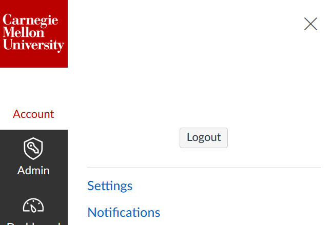

Getting started with Canvas
How do I get a new Canvas Course?
You will see a link/button to request a Canvas course from the Canvas website homepage here:
- You can also navigate directly to the online course request form.
- Note, we maintain the top-level www.cmu.edu/canvas/ webpage to provide you with timely announcements about the state of Canvas and/or the online course request form (e.g., downtimes)
When will your course be created after submitting the request?
For courses listed in S3 with you as the instructor of record:
- Upon submitting the Canvas course request form, you should notice that the Canvas course is created instantaneously and a direct link to the course site is provided.
For courses not listed in S3 and/or you are not listed as the instructor of record:
- Contact your department to associate you as the instructor of record in S3.
- Email us and we will create a Canvas course for you so that you can develop your course site as you wait for the S3 process to complete.
How do I get content moved over from a previous Canvas or Blackboard course?
To copy content from a previous Canvas course:
This is integrated as part of the online course request process. From within the online course request form, you will select from a dropdown list, the Canvas course you'd like to copy into your new Canvas course. If you do not see the course in the list, contact us for assistance.
NOTE: Once you complete and submit the online course request form, your course will be created instantaneously, HOWEVER, the content you are copying over will take a few minutes to process and will not show up in your course until the process is completed.
To copy content from a previous Blackboard course:
You will find a text field on the online course request form where you will indicate the course semester, number, and title. We will then manually move your Blackboard course content into your new Canvas course site for you.
Feel free to contact us for additional help or questions you might have: canvas-help@andrew.cmu.edu or 412-268-9090
How do registered students get added to my Canvas course?
Automated student enrollments:
Once students are officially enrolled in the course, we will pick up those enrollments automatically through regularly scheduled enrollment processes.
How do I manually add non-registered students (e.g., waitlisted) to my course?
Students on the waitlist are not automatically added, however you can add them manually. Do this by:
- Creating a new section in your Canvas course (e.g., a "Waitlist" section).
- Add the students to the manually created section.
IMPORTANT NOTE: Adding non-registered students to a manually created section in Canvas will ensure that they do not get removed from the course automatically when regularly scheduled automated enrollment feed processes run. - Contact us if you'd like more help with this: canvas-help@andrew.cmu.edu or 412-268-9090 (phone hours: 8:30am-5:00pm ET, Mon-Fri).
Step 1. Create a new section in your Canvas course:
- From within your Canvas course, navigate to “Settings” in the left course navigation.
- Select the “Sections” tab at the top of the Settings page.
- Enter a Name for your section and click the “add Section” button.
Step 2: Add students to the manually created section:
- From within your Canvas course, navigate to the “People” page and click the “Add People” button.
- An “Add People” window will launch where you will enter the person’s Andrew email address and select the section you just created from
the dropdown list provided.
- Click “Next” to review the user’s details and then click the “Add Users” button to complete the process.
How do I select/change a Homepage for the course?
When you enter your course site, you will land on the course homepage. To change which area of your course is the default landing page:
- Click the Choose Home Page button on the right side of the page (in the Course Status
menu).
- A pop-up window of options for the homepage will appear. Click the radio button next to the area you would like to be the homepage and
click Save to update your course homepage.
NOTE: if the “Pages Front Page” is greyed out/unavailable to select, you will first need to indicate one of your “Pages” as a
“homepage”.
How do I set a Pages Front Page?
If you would like to make a content page your course homepage, you will need to either have a content page already created or create a new content page, then select that page as your homepage.
How to create a new content page:
- Select “Pages” from the left course navigation and click the (+ Page) add page button.
- Enter the content that will appear on the page; and then click Save and Publish..
How to select a page to use as a homepage/Front Page
- Navigate again to “Pages” from the left course navigation.
- Find the page in the listing that you’d like to use as your course home page and click to expand the settings menu
associated with this page (Click on the gear icon at the right of the page listing). From the dropdown menu, select “Use as Front
Page”.
- This page will now be available to select from the “Choose Home Page” menu.
(Note: Click the “Home” left navigation item to find the “Choose Home Page” button/menu.)
How do I publish my course so students can see it?
By default, your course site is unavailable to students until you “publish” it. Once your course is published, students will be able to view and interact with the content you’ve created in your course.
- Navigate to your course “Home” page.
- Find the “Course Status” set of menu items (typically found at the right).
Click the Publish button. Your course can now be seen by enrolled students.
How can I see what students see in my Canvas course?
Adding and organizing content in Canvas
How do I upload and manage files?
There are several ways you can upload files from your computer to Canvas. Two of the most popular are by:
- Uploading a file to a module.
- Uploading a file to a content page or the Syllabus area.
Uploading a file to a module
To upload a file to a module:
- Click the + button next to the module where you’d like the file to be located.
- Using the pop-up window that appears, select File and click [New
file].
- Click Browse to browse your computer for the file. Once you have found the file, click the
file name to select it.
- Once the file has been selected, click Add Item to upload the file to the
module.
Inserting links to files in content pages
When you edit a content page (such as the Syllabus page), you can upload files from your computer into the page. To do this:
- Navigate to the page where you’d like to make the file available and click the “Edit” button.
- You will notice a set of tabs for adding “Links, Files, and Images” to the page. Select the Files tab.
- Click “+ Upload a new file”.
- Browse your computer to locate and select the file. Once you have selected the appropriate file,
click Upload to insert a link to the file into the content page.
- You will notice the link to the file is now shown in the page editor window. Remember to save your page by clicking on the
“Save” button (located at the bottom of the page window).
What’s the difference between Modules and Files?
Modules
The Modules area in Canvas can be used for organizing your content and presenting it to students. Modules can function as content folders which are organized by week, lecture or topic, and which group together related files, content pages, and links to assignments, quizzes, or discussion boards.
Access to modules can also be restricted by date, or by prerequisite modules or activities, which allows you to control your students’ flow through the course.

Files
The Files area in Canvas contains all images and documents you upload to the course, or that are imported from Blackboard. While content in the Files area can be organized into folders and sub-folders, it is important to remember that all content uploaded to the course appears in the Files area - even documents you may not want your students to have access to (such as previous semester example assignments, or exam keys).
The Files area does not allow you to place links to Canvas assignments, quizzes, or discussion boards into content folders. The Files area also does not allow you to attach any explanatory text to a file stored in the Files area.
Typically, instructors hide the Files area from student view and, instead, organize student-facing content within Modules.
How do I hide the Files area from students?
- Go to the Settings area of your course
- Click the Navigation tab at the top of the page
- Click the gear next to Files and select Disable
- Scroll to the bottom of the page and click Save to save your changes
Communicating with Students (TAs, Groups)
How do I send email to students in my Canvas course?
You can send email to students from the Inbox area of Canvas. Students will receive your email both to their Canvas Inbox and to their preferred email in the CMU Directory.
To send an email through Canvas:
- Go to the Inbox area of Canvas (from the far left nav bar).
- Click on the “compose a new message” icon (at the top of the screen).
- Specify the course the recipient(s) by either typing in the recipient’s name or clicking on the address book icon to select all
students, TAs, etc.
- Enter a message Subject and Body.
NOTE: If you would like to BCC the recipients of your email, check the “Send an individual message to each recipient” box. - When you are a ready to send your email, click the “Send” button.
How do I CC myself on emails I send through Canvas?
Although the Canvas Inbox contains a Sent folder of emails you sent out through Canvas, some users like to receive an email copy of any message they send through Canvas.
To set your notification preferences so you are automatically cc-ed on emails you send through Canvas:
- Go to your Account (from the left Navigation bar) and click on “Notifications” from Account menu
listing.

- On the Notifications page, scroll down to the “Conversations” section and make sure the green check mark is selected for the option
“Conversations Created By Me”.
What do I do when a student says s/he is not receiving the emails I’m sending through Canvas?
If a student reports that they are not receiving the emails you send through Canvas, here are some basic troubleshooting steps they can take:
- Make sure they are checking their preferred email address
- Emails from Canvas are sent to the preferred email address the student has on file in the CMU Directory.
- Students can also view their preferred email address by going to Account > Settings within Canvas (their email address will be listed on the upper right side of the page).
- Have the student check their Notification Preferences.
- Go to Account > Notifications within Canvas.
- Scroll to the Conversations area and make sure the green check mark is selected next to “Conversation Message” (Note: this
is enabled by default).
- Contact Canvas Support at: canvas-help@andrew.cmu.edu and we’ll be happy to help resolve the issue!
How do I make an announcement to students in Canvas?
Announcements post to your course site and generate announcement notifications that are pushed to a student’s Canvas Dashboard and, depending on their notification preferences, email.
- Navigate to the Announcements page in your course and click to add an announcement (+
Announcement button).
- Enter the announcement title and message and click “Save”.
NOTE: If you would like to delay the posting of your announcement, click the “Delay Posting” box and set the date/time when you would like your announcement to appear.
Using Discussions in Canvas
How does the discussion board work in Canvas?
Canvas’ Discussions area allows for the creation of discussion forums. Discussions provide a space for interactive communication between two or more people; users can participate in a conversation with an entire class or group.
To create a discussion forum in Canvas:
- Go to the Discussions area of your course.
- Click the + Discussion button at the top of the page.
- Give your discussion a title and enter a discussion prompt or instructions in the box below.
- Select any additional options for the discussion board.
- By default, discussions are created as focused discussions.
To create a threaded discussion, click the Allow threaded replies checkbox. - To require users to reply to the discussion before they can see any other replies, click the Users must post before seeing replies checkbox.
- To enable a discussion podcast feed, click the Enable podcast feed checkbox.
- To create a graded discussion, click the Graded checkbox.
You can assign graded discussions to everyone, individual students, course sections, or course groups. - To allow students to like discussion replies, click the Allow liking checkbox.
- To make the discussion a group discussion, click the This is a Group Discussion checkbox.
- Click Save & Publish to publish your discussion to students.
What are some other discussion board options that I might consider using (e.g., Piazza)?
Piazza is another discussion tool available to you in Canvas. Piazza provides you with a discussion platform where you can post questions, notes, or polls to your course. Additionally, Piazza allows you to organize your discussion threads into folders that can be named according to a convention that makes sense to your course.
You can preview Piazza “in action” by going to https://piazza.com/ and clicking the View a Real Class button.
Enabling Piazza in your course
To enable Piazza in your Canvas course (so students can access Piazza from within Canvas):
- Go to the Settings area of your course and select the Navigation tab
- Scroll down to locate Piazza and click the gear icon. Select “Enable”
- Scroll to the bottom of the page to Save your changes
- A link to Piazza will appear in the left navigation menu of your course. Both instructors and students will be able to access Piazza by clicking on this link.
- Note: The first time the instructor clicks on the link to Piazza, they will need to enter information about the course (including the course name, estimated enrollment, and term)